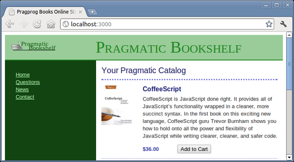

Now that that’s done, it is time to add an Add to Cart button for each product.
There is no need to create a new controller or even a new action. Taking a look at the actions provided by the scaffold generator, you find index, show, new, edit, create, update, and destroy. The one that matches this operation is create. (new may sound similar, but its use is to get a form that is used to solicit input for a subsequent create action.)
Once this decision is made, the rest follows. What are we creating? Certainly not a Cart or even a Product. What we are creating is a LineItem. Looking at the comment associated with the create method in app/controllers/line_items_con-troller.rb, you see that this choice also determines the URL to use (/line_items) and the HTTP method (POST).
This choice even suggests the proper UI control to use. When we added links before, we used link_to, but links default to using HTTP GET. We want to use POST, so we will add a button this time; this means we will be using the button_to method.
We could connect the button to the line item by specifying the URL, but again we can let Rails take care of this for us by simply appending _path to the controller’s name. In this case, we will use line_items_path.
However, there’s a problem with this: how will the line_items_path method know which product to add to our cart? We’ll need to pass it the id of the product corresponding to the button. That’s easy enough—all we need to do is add the :product_id option to the line_items_path call. We can even pass in the product instance itself—Rails knows to extract the id from the record in circumstances such as these.
In all, the one line that we need to add to our index.html.erb looks like this:
| rails31/depot_f/app/views/store/index.html.erb | |
<% if notice %> |
|
<p id="notice" ><%= notice %></p> |
|
<% end %> |
|
<h1>Your Pragmatic Catalog</h1> |
|
<% @products.each do |product| %> |
|
<div class="entry" > |
|
<%= image_tag(product.image_url) %> |
|
<h3><%= product.title %></h3> |
|
<%= sanitize(product.description) %> |
|
<div class="price_line" > |
|
<span class="price" ><%= number_to_currency(product.price) %></span> |
|
| * | <%= button_to 'Add to Cart', line_items_path(product_id: product) %> |
</div> |
|
</div> |
|
<% end %> |
|
There’s one more formatting issue. button_to creates an HTML <form>, and that form contains an HTML <div>. Both of these are normally block elements, which will appear on the next line. We’d like to place them next to the price, so we need to add a little CSS magic to make them inline:
| rails31/depot_f/app/assets/stylesheets/store.css.scss | |
p, div.price_line { |
|
margin-left: 100px; |
|
margin-top: 0.5em; |
|
margin-bottom: 0.8em; |
|
form, div { |
|
display: inline; |
|
} |
|
} |
|
The ideal place to put these lines is within the rule for .entry which itself is nested within the rule for .store.
Now our index page looks like Figure 13, Now there’s an Add to Cart button.. But before we push the button, we need to modify the create method in the line items controller to expect a product id as a form parameter. Here’s where we start to see how important the id field is in our models. Rails identifies model objects (and the corresponding database rows) by their id fields. If we pass an id to create, we’re uniquely identifying the product to add.
|  |
|
Figure 13. Now there’s an Add to Cart button. |
Why the create method? The default HTTP method for a link is a get, the default HTTP method for a button is a post, and Rails uses these conventions to determine which method to call. See the comments inside the app/controllers/ line_items_controller.rb file to see other conventions. We’ll be making extensive use of these conventions inside the Depot application.
Now let’s modify the LineItemsController to find the shopping cart for the current session (creating one if there isn’t one there already), add the selected product to that cart, and display the cart contents. All we need to modify is a few lines of code in the create method in app/controllers/line_items_controller.rb:[25]
| rails31/depot_f/app/controllers/line_items_controller.rb | |
def create |
|
| * | @cart = current_cart |
| * | product = Product.find(params[:product_id]) |
| * | @line_item = @cart.line_items.build(product: product) |
respond_to do |format| |
|
if @line_item.save |
|
| * | format.html { redirect_to @line_item.cart, |
notice: 'Line item was successfully created.' } |
|
format.json { render json: @line_item, |
|
status: :created, location: @line_item } |
|
else |
|
format.html { render action: "new" } |
|
format.json { render json: @line_item.errors, |
|
status: :unprocessable_entity } |
|
end |
|
end |
|
end |
|
We use the current_cart method we implemented here to find (or create) a cart in the session. Next, we use the params object to get the :product_id parameter from the request. The params object is important inside Rails applications. It holds all of the parameters passed in a browser request. We store the result in a local variable because there is no need to make this available to the view.
We then pass that product we found into @cart.line_items.build. This causes a new line item relationship to be built between the @cart object and the product. You can build the relationship from either end, and Rails will take care of establishing the connections on both sides.
We save the resulting line item into an instance variable named @line_item.
The remainder of this method takes care of XML requests, which we will cover here, and handling errors, which we will cover in more detail here. But for now, we only want to modify one more thing: once the line item is created, we want to redirect you to the cart instead of back to the line item itself. Since the line item object knows how to find the cart object, all we need to do is add .cart to the method call.
As we changed the function of our controller, we know that we will need to update the corresponding functional test. We need to pass a product id on the call to create and change what we expect for the target of the redirect. We do this by updating test/functional/line_items_controller_test.rb.
| rails31/depot_g/test/functional/line_items_controller_test.rb | |
test "should create line_item" do |
|
assert_difference('LineItem.count') do |
|
| * | post :create, product_id: products(:ruby).id |
end |
|
| * | assert_redirected_to cart_path(assigns(:line_item).cart) |
end |
|
While we haven’t talked about the assigns method to date, that’s because it has been in generated scaffolding. This method gives us access to the instance variables that have been (or can be) assigned by controller actions for use in views.
We now rerun the functional tests:
depot> rake test:functionals |
Confident that the code works as intended, we try the Add to Cart buttons in our browser.
And here is what we see:
This is a bit underwhelming. Although we have scaffolding for the cart, when we created it, we didn’t provide any attributes, so the view doesn’t have anything to show. For now, let’s write a trivial template (we’ll tart it up in a minute):
| rails31/depot_f/app/views/carts/show.html.erb | |
<% if notice %> |
|
<p id="notice" ><%= notice %></p> |
|
<% end %> |
|
<h2>Your Pragmatic Cart</h2> |
|
<ul> |
|
<% @cart.line_items.each do |item| %> |
|
<li><%= item.product.title %></li> |
|
<% end %> |
|
</ul> |
|
So, with everything plumbed together, let’s hit Refresh in our browser and see our simple view displayed:
Go back to http://localhost:3000/, the main catalog page, and add a different product to the cart. You’ll see the original two entries plus our new item in your cart. It looks like we have sessions working. It’s time to show our customer, so we call her over and proudly display our handsome new cart. Somewhat to our dismay, she makes that tsk-tsk sound that customers make just before telling you that you clearly don’t get something.
Real shopping carts, she explains, don’t show separate lines for two of the same product. Instead, they show the product line once with a quantity of 2. Looks like we’re lined up for our next iteration.